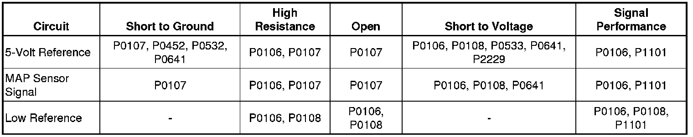
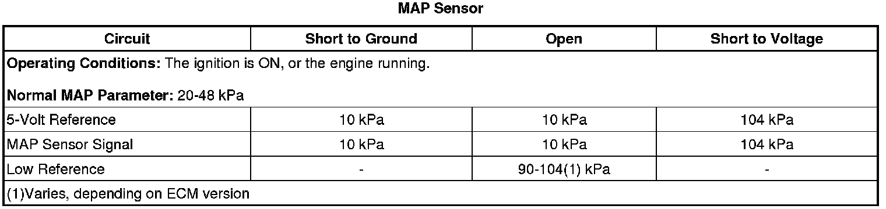

P0108
DTC P0107 or P0108
Diagnostic Instructions
* Perform the Diagnostic System Check - Vehicle (Initial Inspection and Diagnostic Overview) prior to using this diagnostic procedure.
* Review Strategy Based Diagnosis (Initial Inspection and Diagnostic Overview) for an overview of the diagnostic approach.
* Diagnostic Procedure Instructions (Initial Inspection and Diagnostic Overview) provides an overview of each diagnostic category.
DTC Descriptors
DTC P0107
- Manifold Absolute Pressure (MAP) Sensor Circuit Low Voltage
DTC P0108
- Manifold Absolute Pressure (MAP) Sensor Circuit High Voltage
Diagnostic Fault Information

Typical Scan Tool Data

Circuit Description
The manifold absolute pressure (MAP) sensor has a 5-volt reference circuit, a low reference circuit, and a signal circuit. The engine control module (ECM) supplies 5 volts to the MAP sensor on a 5-volt reference circuit, and provides a ground on a low reference circuit. The MAP sensor provides a voltage signal to the ECM on a signal circuit relative to the intake manifold pressure changes.
Conditions for Running the DTC
P0107
* DTCs P0120, P0121, P0122, P0123, P0220, P0221, P0222, P0223, P0641, or P0651 are not set.
* The throttle angle is greater than 0 percent when the engine speed is less than 800 RPM.
OR
* The throttle angle is greater than 12 percent when the engine speed is greater than 800 RPM.
* This DTC runs continuously when the above conditions are met.
P0108
* DTCs P0120, P0121, P0122, P0123, P0220, P0221, P0222, P0223, P0641, or P0651 are not set.
* The engine has been running for a period of time that is determined by the start-up engine coolant temperature (ECT). The time ranges from 4 minutes at less than -30°C (-22°F) to 2 seconds at more than 30°C (86°F).
* The throttle angle is less than one percent when the engine speed is less than 1,200 RPM.
OR
* The throttle angle is less than 20 percent when the engine speed is greater than 1,200 RPM.
* This DTC runs continuously when the above conditions are met.
Conditions for Setting the DTC
P0107
The ECM detects that the MAP sensor voltage is less than 0.10 volt for greater than 5 seconds.
P0108
The ECM detects that the MAP sensor voltage is more than 4.80 volts for greater than 5 seconds.
Action Taken When the DTC Sets
DTCs P0107 and P0108 are Type B DTCs.
Conditions for Clearing the MIL/DTC
DTCs P0107 and P0108 are Type B DTCs.
Reference Information
Schematic Reference
Engine Controls Schematics (Electrical Diagrams)
Connector End View Reference
Component Connector End Views (Connector Views)
Electrical Information Reference
* Circuit Testing (Component Tests and General Diagnostics)
* Connector Repairs (Component Tests and General Diagnostics)
* Testing for Intermittent Conditions and Poor Connections (Component Tests and General Diagnostics)
* Wiring Repairs (Component Tests and General Diagnostics)
DTC Type Reference
Powertrain Diagnostic Trouble Code (DTC) Type Definitions (Diagnostic Trouble Code Descriptions)
Scan Tool Reference
Control Module References (Programming and Relearning) for scan tool information
Special Tools
* J 23738-A Mityvac
* J 35555 Metal Mityvac
Circuit/System Verification
1. Verify that the following DTCs are not set: P0641 or P0651.
• If any of the DTCs are set, refer to DTC P0641 or P0651 (P0641) .
2. Ignition ON, observe the scan tool MAP sensor parameters. The readings should be between 0.05-4.9 volts.
3. Engine running, observe the DTC information with a scan tool. DTCs P0107 or P0108 should not set.
4. Operate the vehicle within the Conditions for Running the DTC. You may also operate the vehicle within the conditions that you observed from the Freeze Frame/Failure Records data.
Circuit/System Testing
1. Ignition OFF, disconnect the harness connector at the MAP sensor.
2. Ignition OFF for 90 seconds, test for less than 5 ohms of resistance between the low reference circuit terminal A and ground.
• If greater than the specified range, test the low reference circuit for an open/high resistance. If the circuit tests normal, replace the ECM.
3. Ignition ON, test for 4.8-5.2 volts between the 5-volt reference circuit terminal C and ground.
• If less than the specified range, test the 5-volt reference circuit for an open/high resistance or a short to ground. If the circuit tests normal, replace the ECM.
• If greater than the specified range, test the 5-volt reference circuit for a short to voltage. If the circuit tests normal, replace the ECM.
4. Verify the scan tool MAP sensor voltage parameter is less than 12 kPa.
• If greater than the specified range, test the signal circuit terminal B for a short to voltage. If the circuit tests normal, replace the ECM.
5. Install a 3A fused jumper wire between the signal circuit terminal B and the 5-volt reference circuit terminal C. Verify the scan tool MAP sensor parameter is greater than 4.9 volts.
• If less than the specified range, test the sensor signal circuit for a short to ground, open, high resistance.
6. If all circuits test normal, test or replace the MAP sensor.
Component Testing
Important: You must perform the Circuit/System Testing before proceeding with the Component Testing.
1. Ignition OFF, remove the MAP sensor.
2. Install a 3A fused jumper wire between the 5-volt reference circuit terminal C and the corresponding terminal of the MAP sensor.
3. Install a jumper wire between the low reference circuit terminal A of the MAP sensor and ground.
4. Install a jumper wire at terminal B of the MAP sensor.
5. Connect a DMM between the jumper wire from terminal B of the MAP sensor and ground.
6. Ignition ON, with the J 23738-A or J 35555 , slowly apply vacuum to the sensor while observing the voltage on the DMM. The voltage should vary between 0-5.2 volts, without any spikes or dropouts.
• If the voltage reading is erratic, replace the MAP sensor.
Repair Instructions
Perform the Diagnostic Repair Verification (Verification Tests) after completing the diagnostic procedure.
* Manifold Absolute Pressure Sensor Replacement (Service and Repair)
* Control Module References (Programming and Relearning) for ECM replacement, setup, and programming